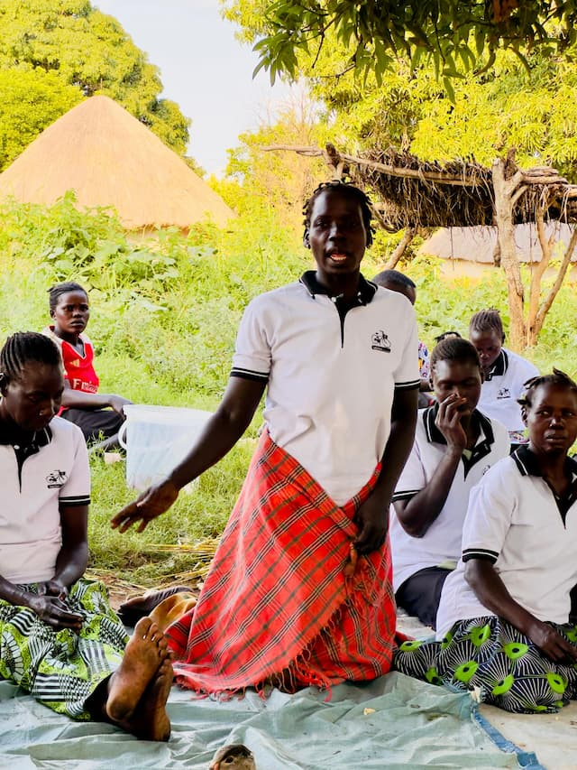
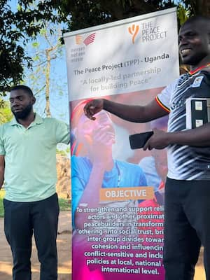

Community Empowerment Network

Community Empowerment Network (CEN) is a community-driven organization committed
to
empowering
communities and transforming lives through advocacy, education, and holistic
well-being. Guided by
the motto “Together We Rise,” CEN promotes social justice, equal opportunities,
lifelong learning,
mental and physical well-being, inclusivity, resilience, and youth engagement to
build vibrant and
resilient communities where every individual has the opportunity to thrive,
learn,
and contribute.
History
The Community Empowerment Network (CEN) was established on July 30, 2024, in response
to
growing
social, educational, and well-being challenges affecting communities, especially
vulnerable
populations, youth, women, and families. The organization was founded with the
belief
that
sustainable community transformation can only be achieved when people are empowered
to
actively
participate in shaping their own development and improving their quality of life.
CEN emerged from a shared vision among community leaders and development-minded
individuals who
recognized the increasing need for stronger advocacy, education, social inclusion,
mental well-being
support, and community resilience. Many communities continued to face barriers such
as
limited
access to quality education, low awareness of rights and opportunities, social
inequalities, poor
health-seeking behaviors, unemployment among youth, psychosocial challenges, and
inadequate
community participation in decision-making processes.
The founders envisioned an organization that would not only respond to immediate
community needs but
would also strengthen the long-term capacity of individuals and systems to create
meaningful and
lasting change. This vision inspired the establishment of CEN under the guiding
principle of
“Empowering Communities, Transforming Lives.”
From its inception, CEN positioned itself as a community-driven organization
committed
to advancing
advocacy, education, and holistic well-being. The organization adopted the motto
“Together We Rise”
to emphasize collective responsibility, unity, collaboration, and the belief that
lasting change is
achieved through partnerships and community participation.
Since its formation, CEN has focused on promoting social justice, inclusivity,
equity,
and
empowerment through initiatives aimed at strengthening livelihoods, improving access
to
information
and learning opportunities, supporting health and psychosocial well-being, and
encouraging active
citizenship. The organization works to amplify community voices, particularly among
young people,
women, and marginalized groups, ensuring that their concerns are represented in
community and
governance spaces.
Recognizing the importance of partnerships in achieving sustainable impact, CEN has
embraced
collaboration with local leaders, civil society actors, government structures,
development partners,
and communities to strengthen advocacy efforts, expand educational opportunities,
and
improve
community resilience. Through these efforts, the organization seeks to contribute to
communities
where individuals are empowered, informed, resilient, and able to contribute
meaningfully to their
own development.
As CEN continues to grow, it remains committed to its founding values of
empowerment,
equity,
education, inclusivity, resilience, and advocacy. The organization continues to
pursue
innovative
and community-centered approaches that strengthen social cohesion, well-being, and
opportunities for
all, while maintaining its commitment to building vibrant and resilient communities
where every
individual has the opportunity to thrive, learn, and contribute.